这是什么
一个跑在方形表盘上的文字冒险。全部操作只有两个动作：滚 和 点。
-
表冠操作
上下滚动切换选项，点一下确定。手表版把表冠的旋转事件直接接到了菜单光标上， 所以整局游戏不需要任何按钮。
-
逐字取名
中文没有软键盘可用，于是做了整屏字库：一页 48 个字，配「決定 / 削除 / 翻页」， 第三页是英数字。名字最长 6 个字。
-
分支出身
骑士、盗贼、魔术师三选一。选完当场换掉桌子左边那个「你」的形态 —— 这是整个序章最有辨识度的一步。
运行要求：iQOO WATCH GT（方形表盘，390 × 450）· 系统为蓝河 BlueOS · 当前版本 v1.0.1。个人非商业同人作品，不提供安装包。
开始游戏
下面这块表是把手表版在浏览器里还原了一遍，界面素材用的就是应用里的原始图片。 点一下表盘，然后就能开始。
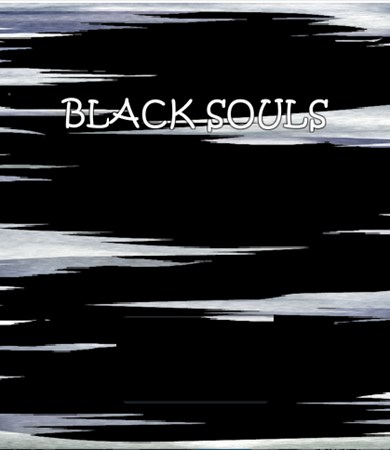
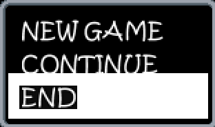
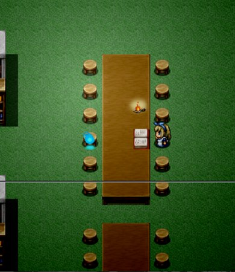
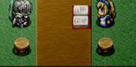
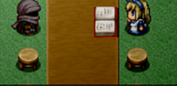
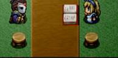
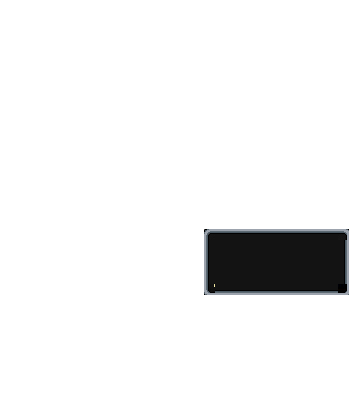
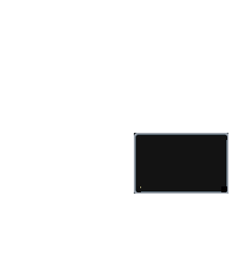
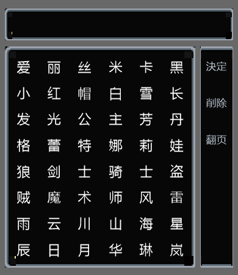
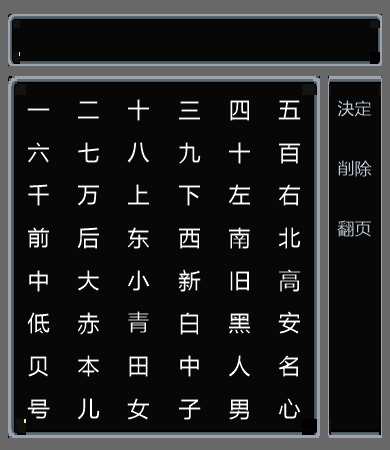
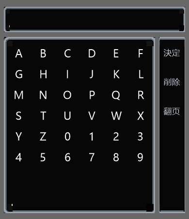
怎么玩
- 滚轮 / ↑↓ / 上下滑 —— 表冠滚动
- 点击 / Enter / 空格 —— 确定
- 对话进行中：点一下可以跳过打字机，立刻显示整句
浏览器还原版 · 内容与手表实机一致，界面素材取自应用原图，但不是真机运行。
与实机的两处差异：输入方式由表冠旋转改为滚轮 / 按键 / 触摸； CONTINUE 会读取浏览器本地进度（手表版没有存档功能）。
BGM 用的是应用里的 title.mp3，只在你按下按钮后播放。
序章四步
手表实机截图，按游玩顺序排列。
-
01
标题菜单
NEW GAME / CONTINUE / END，光标跟着表冠走，点一下进入。
-
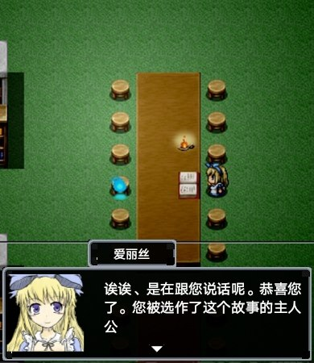
02
对话推进
台词逐字打出，立绘压在对话框内左侧，背景是图书馆长桌。
-
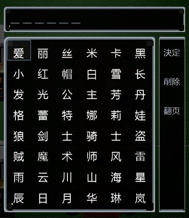
03
逐字取名
48 字一格一页，右侧「決定 / 削除 / 翻页」，顶部实时显示已选的字。
-
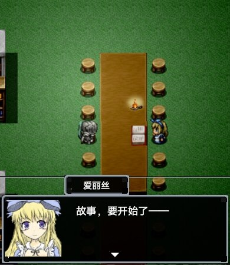
04
故事开始
选完出身确认形态，序章以「故事，要开始了——」收尾。
原版对照
手表版的界面素材全部从原版画面里抠出：整屏 UI 做成图层，文字用 canvas 重画。 下面是 原版 PC 画面，顺序与序章流程一致 —— 点开可看大图。
以上均为原版 PC 画面，仅作移植对照使用；版权归原作者 寿司勇者トロ 所有。
怎么做的
技术细节收在这里，想看的点开。
工程结构：一个蓝河手表应用
本体是 vivo 蓝河（BlueOS）的手表应用，页面用 .ux 单文件组件写，
清单是 manifest.json：包名 blacksouls.demo，
设计基准宽 466，设备类型 watch / watch-square。
src/
├── app.ux 应用入口：全局 BGM 单例
├── manifest.json 包名 / 版本 / 设备类型 / 路由
├── game/
│ └── story.js 剧本数据（说话人、台词、选项、跳转）
├── pages/
│ ├── Title/ 标题菜单 + 表冠选单
│ └── Story/ 剧情页：对话 / 选项 / 取名
└── assets/
├── images/ 标题底图、菜单框、光标
├── images/scene/ 场景底板、立绘、整套 UI 图层
└── audio/title.mp3 主界面 BGM
剧情不是写死在代码里的：story.js 是一串步骤
（say / choice / input / sprite /
set / goto / end），页面只负责播放。
改剧情不用动逻辑，网页版也沿用了同一份数据。
界面素材是怎么来的：整屏图层 + canvas 画字
手表版没有原版的工程文件，于是从原版截图里把界面「抠」成整屏图层： 对话框、两行 / 三行选项框、取名界面各做成一张 390 × 450 的 PNG， 叠在场景底板上。图层自带透明通道，所以换界面只是切换显示哪一张。
文字全部画在 canvas 上，用绝对坐标定位 —— 因为手表端那套框架不支持
position: absolute，用布局引擎挪不动字。字号、行高、光标位置
全部按设计单位写死，网页版照搬了这些常量。
取名界面的 48 个字格和「決定 / 削除 / 翻页」是烘进图片里的，不重画； 只有顶部那行输入的字实时绘制。这三页字库（中文两页 + 英数一页）与代码里的 字表逐字对应，网页版的点击命中就是按同一张字表算的。
BGM 的无缝循环：应用级单例 + 轮询
音频播放器是全局单例，放在应用入口而不是页面里 —— 这样标题页和剧情页之间 来回跳转时音乐不会断，退到后台才暂停，退出应用自动停。
播放接口没有循环参数，所以循环要自己实现：每 200 ms 查一次播放状态， 在还剩 0.2 秒的时候就把进度拉回开头重放。音频文件的尾巴和开头做过交叉淡化， 这样接缝处几乎听不出断点，比「播完了再重放」顺得多。
打包与真机安装
用 BlueOS Studio 编译成 .rpk 后签名安装到手表。发布构建需要证书，
命令行 install 加 send 两步把包推进设备。
下面这张是打包与安装时的界面。
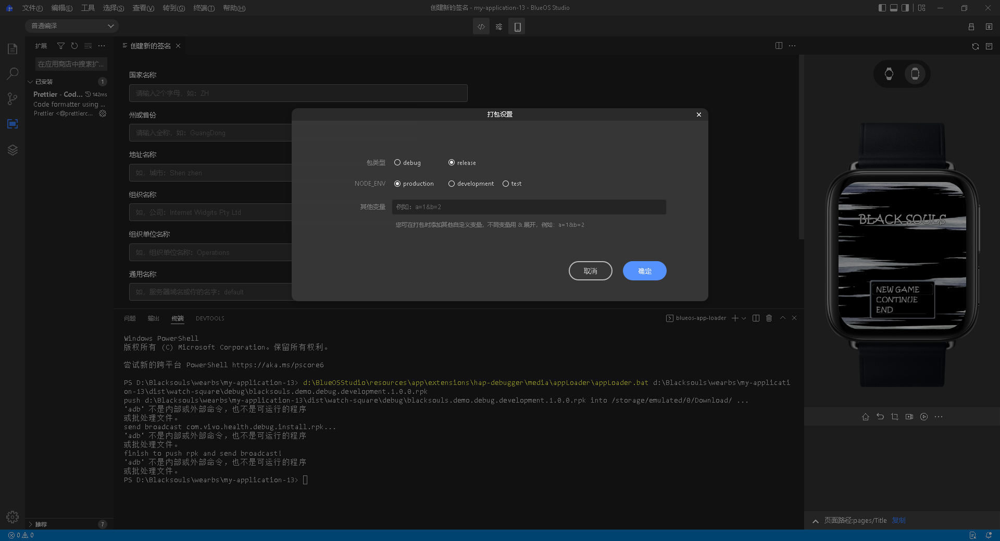
网页还原版做了哪些还原，有哪些差异
- 坐标系、图层位置、字号、行高、光标位置：照搬应用里的常量（设计单位 466 × 538）
- 界面素材：全部使用应用内的原始图片，未重绘
- 对话换行：同样是每行 14 字、最多 4 行；打字机速度同样是 50 ms 一个字
- 取名：同一张字表、同样的 48 格分页、同样最多 6 字
- 出身三选一会即时切换立绘，与实机一致
- 差异一：表冠旋转改为滚轮 / 方向键 / 触摸滑动
- 差异二：CONTINUE 读取浏览器本地进度（手表版没有存档）
- 差异三：修正了标题菜单 END 一行缺失的底色（抠图时漏掉的一块）